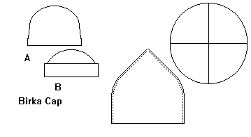

Loosely based on a find from Birka, this cap is made up of four triangular pieces of fabric or leather, sewn together to form a deep cup. These pieces are generally sewn with any number of stitches to butt them together with no overlap. These pieces may be stiffened, lined, tall, short, embroidered, tooled, what have you.Return to Page
Some Clothing of the Middle Ages, by I. Marc Carlson, Copyright 1997 This code is given for the free exchange of information, provided the Author's Name is included in all future revisions, and no money change hands-